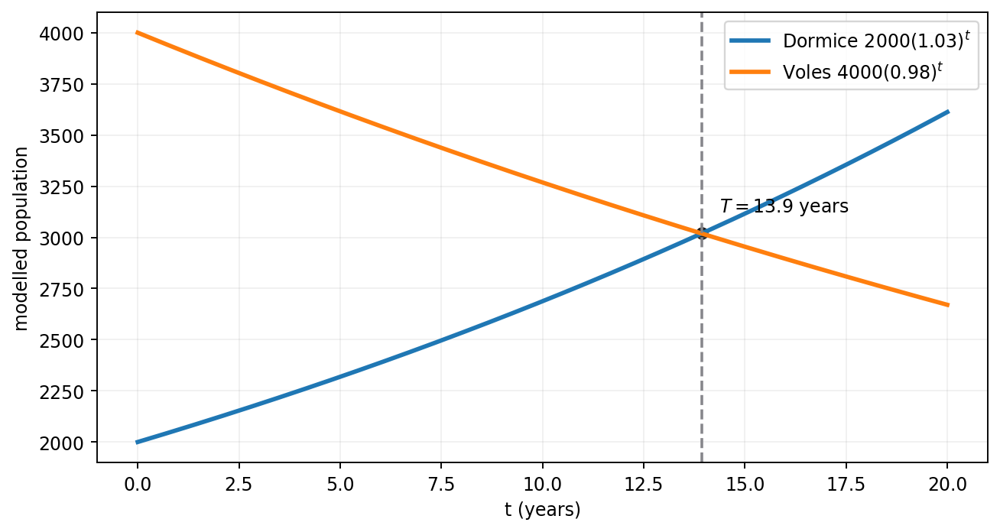

In this question you must show all stages of your working.
Solutions relying entirely on calculator technology are not acceptable.
The number of dormice and the number of voles on an island are being monitored.
Initially there are 2000 dormice on the island.
A model predicts that the number of dormice will increase by 3% each year, so that the numbers of dormice on the island at the end of each year form a geometric sequence.
(a) Find, according to the model, the number of dormice on the island 6 years after monitoring began. Give your answer to 3 significant figures. (2)
The number of voles on the island is being monitored over the same period of time.
Given that
- 4 years after monitoring began there were 3690 voles on the island
- 7 years after monitoring began there were 3470 voles on the island
- the number of voles on the island at the end of each year is modelled as a geometric sequence
(b) find the equation of this model in the form \(N=ab^t\), where \(N\) is the number of voles, \(t\) years after monitoring began and \(a\) and \(b\) are constants. Give the value of \(a\) and the value of \(b\) to 2 significant figures. (3)
When \(t=T\), the number of dormice on the island is equal to the number of voles on the island.
(c) Find, according to the models, the value of \(T\), giving your answer to one decimal place. (3)
Status: Parts (b) and (c) were not completed in the lesson — official-reference reconstruction below.
[8 marks]
Strategy and why. Model the population with a geometric term, not a geometric sum. Because time is measured after monitoring began and the initial value occurs at t=0, the exponent equals elapsed years directly. Apply the requested significant-figure rounding to the population.
Formula, definition or identity before substitution. A quantity increasing by 3 percent each year follows \(D(t)=D_0(1+0.03)^t=2000(1.03)^t\). This is an nth value model, not \(S_n\).
Full source-specific derivation. Evaluate at six years: \[D(6)=2000(1.03)^6=2388.104\ldots.\] To three significant figures this is \[\boxed{2390\text{ dormice}}.\] The trailing zero is significant in the stated precision, and the answer represents a modelled population rather than an exact count.
Diagnosis and why the rejected route fails. The recorded attempt initially used an n-1 exponent and then referred to decimal places. That route fails because the source defines t as years after the initial t=0 state, and 3 significant figures is not the same instruction as 3 decimal places.
Check back and interpretation. At t=0 the model returns exactly 2000, confirming indexing. After six years of 3 percent growth the result must exceed 2000 but remain well below a doubling; 2388 is plausible.
Recognition trigger. For elapsed-time geometric models, write a three-term timeline t=0,1,2 before choosing the exponent. Then annotate s.f. or d.p. beside the final line and round accordingly.
Strategy and why. Divide the two time equations to eliminate the initial scale a and isolate a three-year multiplier. Take the positive cube root for b, then substitute back for a. Preserve unrounded values during calculation and round only the requested parameters.
Formula, definition or identity before substitution. From \(N=ab^t\), the observations give \(ab^4=3690\) and \(ab^7=3470\). Dividing yields \(b^3=3470/3690\); population multipliers are positive.
Full source-specific derivation. Compute \[b=\left(\frac{3470}{3690}\right)^{1/3}=0.9797\ldots\approx0.98\text{ (2 s.f.)}.\] Before finding \(a\), retain the full fourth power: \[b^4=0.9213065204.\] Using the unrounded \(b\), \[a=\frac{3690}{b^4}=4005.181683\ldots\approx4000\text{ (2 s.f.)}.\] Thus the required reference model is \[\boxed{N=4000(0.98)^t}.\] The rounded display follows the mark-scheme convention.
Diagnosis and why the rejected route fails. The source boundary is crucial: the lesson reached the pair of equations but did not complete the parameter arithmetic. Presenting a=4000 and b=0.98 as learner-completed would falsify chronology. Solving equations separately without division is slower and compounds rounding error.
Check back and interpretation. Because the observed population falls from 3690 to 3470, b must be below 1; 0.98 satisfies that. Substitution gives values close to both observations, with small differences explained by displaying parameters to 2 significant figures.
Recognition trigger. For two exponential observations, divide later by earlier to eliminate scale and make the exponent gap explicit. Use unrounded parameters for follow-on work even when the displayed model is rounded.
Strategy and why. Equate the two geometric models, divide to place both exponential factors on one side, and take logarithms to isolate the time exponent. Use the model values consistently and report the time to one decimal place.
Formula, definition or identity before substitution. If \(A r^T=B s^T\), then \((r/s)^T=B/A\) and \(T=\log(B/A)/\log(r/s)\), provided the positive bases are not 1.
Full source-specific derivation. Set the populations equal: \[2000(1.03)^T=4000(0.98)^T.\] Divide by \(2000(0.98)^T\): \[\left(\frac{1.03}{0.98}\right)^T=2.\] Taking logs, \[T=\frac{\log2}{\log(1.03/0.98)}=13.93\ldots.\] Therefore, according to the displayed models, \[\boxed{T=13.9\text{ years}}\] to one decimal place.
Diagnosis and why the rejected route fails. This part was not reached, so no learner or tutor method is attributed. Using a geometric sum would answer cumulative population rather than equality of annual model values. Mixing rounded and unrelated multipliers can shift the final decimal.
Check back and interpretation. At T around 14, the dormice model has grown while the vole model has declined, so a crossing is expected. Substituting 13.9 produces two close populations, confirming the logarithmic isolation and sign.
Recognition trigger. When equating two exponentials with the same time exponent, divide the bases into a single ratio before taking logs. Then check the qualitative directions: one model rising and one falling should yield a positive crossing time.
